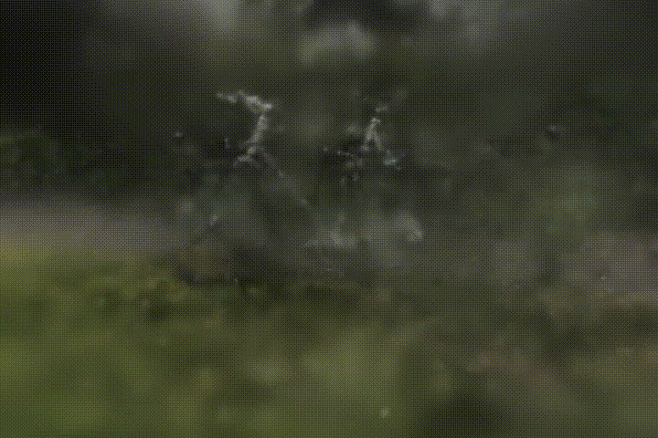

GaussianSplatting.jl
Gaussian Splatting algorithm in pure Julia.

Requirements
Install
Add GaussianSplatting.jl package:
] add https://github.com/JuliaNeuralGraphics/GaussianSplatting.jl.gitUsage
GaussianSplatting.jl comes with a GUI application to train & view the gaussians.
Add necessary packages:
] add AMDGPU # for AMD GPU ] add CUDA # for Nvidia GPU ] add Metal # for Apple GPUStart Julia with at least 2 threads (training runs on a background thread to keep the UI responsive):
julia -t auto-t autois worth preferring: dataset images, masks & depth priors are read from disk with prefetching, additional threads make sure they overlap with training steps.Run:
julia> using AMDGPU; kab = ROCBackend() # for AMD GPU julia> using CUDA; kab = CUDABackend() # for Nvidia GPU julia> using Metal; kab = MetalBackend() # for Apple GPU julia> GaussianSplatting.app(kab)
Hyperparameters
The Open Dataset dialog exposes a handful of the most useful options as checkboxes; the rest of OptimizationParams (learning rates, loss weights, warm-up iterations) is read from an optional .toml file next to them.
Use Save... to write out the values a run is about to use, and Load... to train another dataset with exactly those - which is what makes a reconstruction reproducible once the session that produced it is gone.
Fields that the file omits keep their default, so it only needs to list what a run changes:
use_bilateral_grid = true
bilateral_grid_size = [16, 16, 8]
depth_loss_weight = 2.0
depth_loss_mode = "ssi"The same file works outside the GUI:
julia> opt_params = GaussianSplatting.load_opt_params("params.toml")
julia> GaussianSplatting.save_opt_params("params.toml", opt_params)References
- 3D Gaussian Splatting for Real-Time Radiance Field Rendering: https://arxiv.org/abs/2308.04079